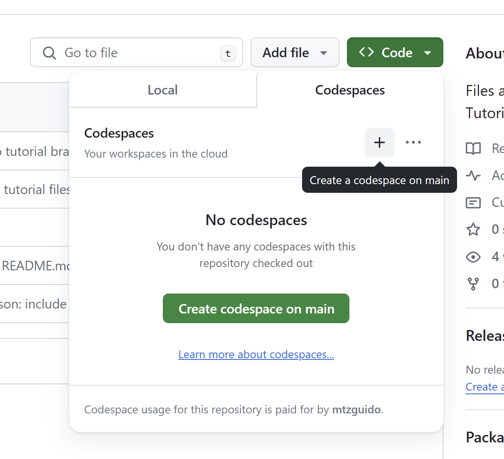
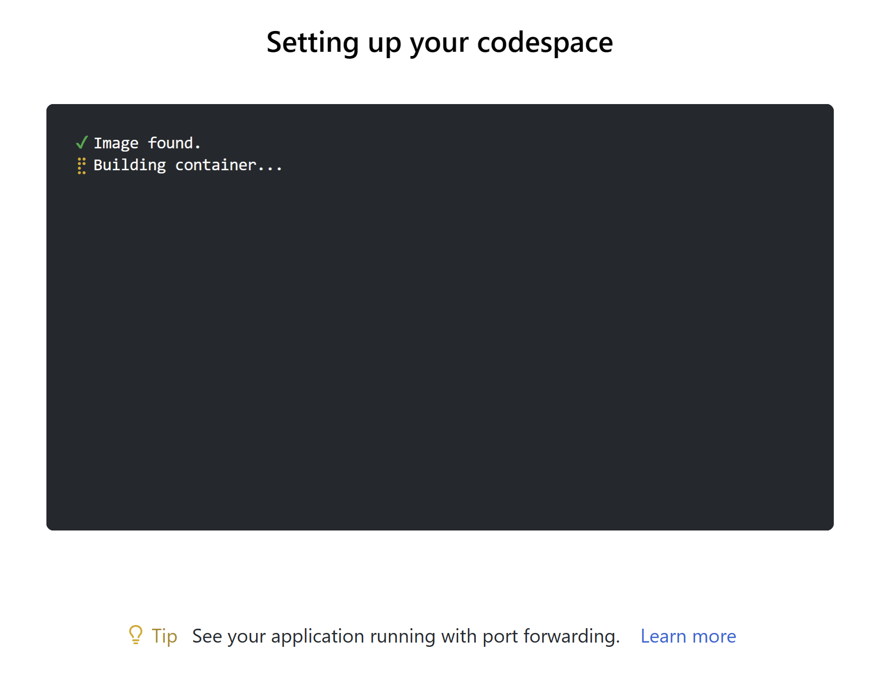
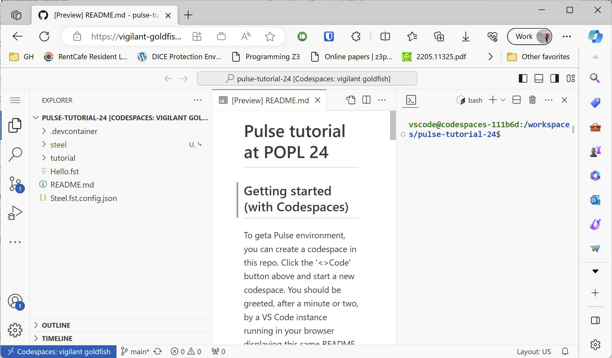
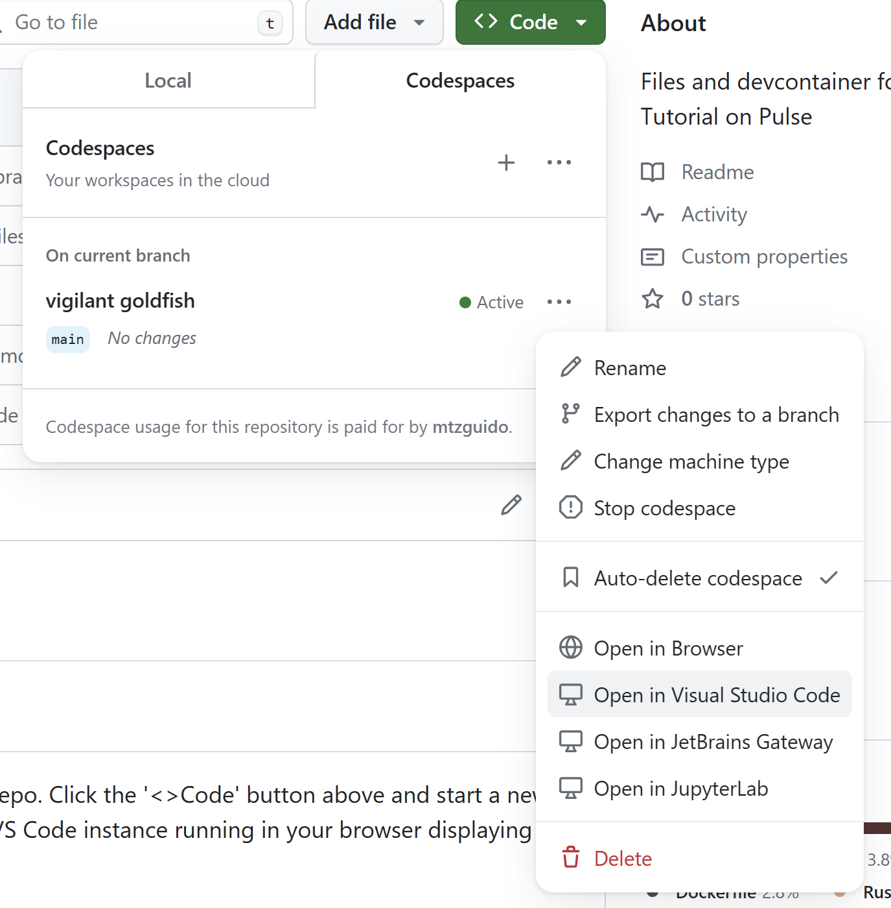

Getting up and running with Codespaces
There are three main ways of running Pulse, roughly sorted in increasing order of difficulty.
The easiest way of using Pulse is with Github Codespaces. With a single click, you can get a full-fledged IDE (VS Code) running in your browser already configured with F* and Pulse.
You can also run Pulse inside a container locally, for a similar 1-click setup that is independent of Github.
Finally, you can also extract a Pulse release tarball and run the binaries directly in your system.
(Building from source is not well-documented yet.)
Note
Unlike the pure F* parts of this tutorial, Pulse code does not yet work in the online playground. Use one of the methods described below to try the examples in this part of the book.
You can find all the source files associated with each chapter in
this folder,
in files named PulseTutorial.*.fst.
Creating a Github Codespace
To do so, go to this repository and click on the ‘<>Code’ button, then select ‘Create codespace on main’. This will use the Dev Container definition in the .devcontainer directory to set up a container where F* and Pulse can run in a reproducible manner.

You should be greeted, after a minute or two, by a VS Code instance running in your browser displaying this same README.


All the usual F* navigation commands should work on Pulse files.
If you prefer a local UI instead of a browser tab, you can “open” the Codespace from your local VS Code installation like so:

F* and Pulse are still running on Github’s servers, so the usage is still computed, but you may find the UI more comfortable.
Running the Dev Container locally
The Dev Container configuration contains all that is needed to run Pulse in an isolated, reproducible manner. If you would like to avoid Codespaces and just run locally, VS Code can set up the Dev Container locally for you very easily.
Simply open the repository in VS Code. You should see a popup claiming that the project has a Dev Container. Choose ‘Reopen in Dev Container’ to trigger a build of the container. VS Code will spawn a new window to download the base Docker image, set up the extension in it, and open the repository again.
This new window should now work as usual.
Using a Pulse release
A release of Pulse, including related F* tools, is available here. Uncompress the archive and follow the instructions in the README.md, notably setting the recommended environment variables.
We also recommend installing VS Code and the fstar-vscode-assistant, from the VS Code marketplace. This should pick up the F* and Pulse installation from your path.